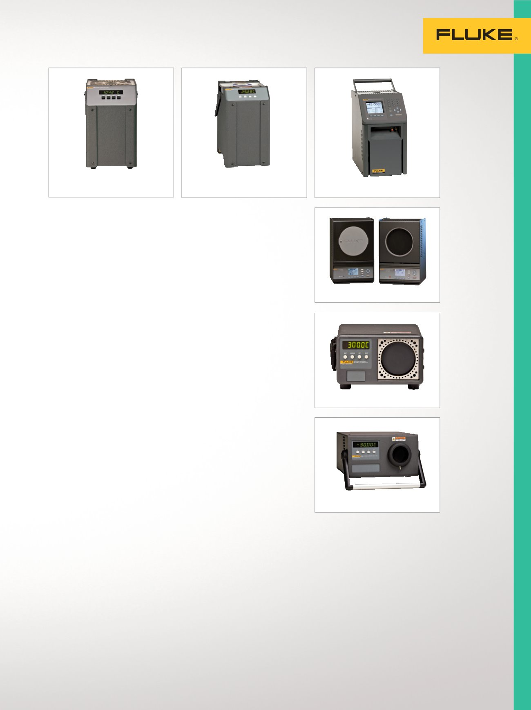

6102/7102/7103
9150
9170/9171/9172/9173
19
Temperature Calibration
9150 Thermocouple Furnace
Convenient, portable
thermocouple furnace.
•
150 °C to 1200 °C
•
Stability of ± 0.5 °C over full
range
•
NIST-traceable calibration
included
•
RS-232 port standard
•
NIST traceable calibration
6102/7102/7103
Micro-Baths
Calibrate a variety of probe dia-
meters—no sleeves required.
•
Three models covering tem-
peratures from –30 °C to 200 °C
•
World’s smallest portable
calibration baths
•
Stability to ± 0.015 °C
•
NIST traceable calibration
9170/9171/9172/9173
Metrology Wells
Best possible accuracy in a
dry-block calibrator
•
Best performing industrial tem-
perature sources in the world
(stability as good as ±0.005 °C)
•
Immersion depth to 203 mm
(8 in)
•
Optional built-in readout reads
reference PRTs to ± 0.006 °C
•
Ranges:
- 9170: –45 °C to 140 °C
- 9171: –30 °C to 155 °C
- 9172: 35 °C to 425 °C
- 9173: 50 °C to 700 °C
•
NVLAP accredited calibration
ONLY with -R model
4180/4181 Precision
Infrared Calibrators
Accredited performance for point
and shoot calibrations.
•
Calibrated radiometrically for
meaningful, consistent results
•
Accredited calibration included
•
Accurate, reliable performance
from –15 °C to 500 °C
•
Large 152 mm (6 in) diameter
target
•
Accredited radiometric
calibration report
9132/9133 Field
Infrared Calibrators
Precision when you need it for
infrared temperature calibration.
•
Verify IR pyrometers from
–30 °C to 500 °C
(–22 °F to 932 °F)
•
RTD reference well for contact
temperature measurement
•
NIST traceable contact
calibration
Infrared
Temperature
Sources
Bench and field precision
infrared calibrators
for accurate and
reliable calibrations of
IR thermometers.
9133
9132
4180/4181